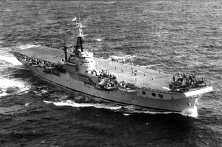

The Third
HMS THESEUS

The third Theseus was a Light Fleet Aircraft Carrier of the 1942 Building Programme, and laid down in that year at the yard of Messrs. Fairfield's, at Govan, on the Clyde. She was launched on 6th July 1944, by the late Lady Somerville, wife of the late Admiral of the Fleet, Sir James Somerville, G.C.B. G.B.E. DSO.
She was commissioned on 9th January', 1946, by Captain T.M. Brownrigg. C.B.E., D.S.O., RN, for service in Home Waters as a trials carrier. In both war and peace it had been found necessary to use one carrier more or less exclusively for the development trials of new ships' equipment and for flying and landing tests with new types of aircraft and modified fittings on existing types; this was Theseus� role for a time.
The ship was 695 feet long, had a beam of 80 feet, a displacement of 17,720 tons and a maximum speed of 25 knots. There was one main hangar, 447 feet long by 52 feet wide, from which aircraft could be taken to the flight deck by two lifts, situated one at each end. Abaft the after-lift was a small secondary hangar to accommodate aircraft under large repair. Connecting with the hangar were compartments containing aircraft spares, weapons and air stores, while in the hangar itself were stowed overhead and in the bulkheads, large components, engines, propellers and main planes. The hangar was the normal place for servicing the aircraft and aircraft could there be refuelled or armed with bombs, torpedoes, mines, depth charges, rockets and gun ammunition. The bombs, rockets and depth charges came up from bomb rooms at the bottom of the ship in lifts, while torpedoes and mines were wheeled into the hangar on loading trolleys.
Above the hangar was the flight deck, the runway from which the ship's aircraft operated. At the fore end was a catapult for launching aircraft at reduced wind speeds; across the after-part of the deck were ten transverse arrester wires to pull up the aircraft on landing, and abreast the island were two barriers to catch aircraft which miss the wires when landing.
These arrester wires were rove through sheaves on the deck edge down to drums on hydraulic rams. They were raised a few inches above the deck by lifting bars and catch a hook, which was suspended from the tail of the aircraft. Immediately before touching down on deck the pilot of the aircraft cut the throttle by order of the Deck Landing Control Officer, and the aircraft was brought to rest as the arrester wire pulled out against the pressure of the hydraulic rams like the elastic of a catapult. As the aircraft came to rest, men released the hook from the wire (the latter being automatically hauled back into place by hydraulic pressure) the barriers were lowered and the aircraft taxied forward either on to the lift to be taken below to the hangar or into the deck park. As soon as the aircraft was forward of the barriers these were raised and the next aircraft was brought on.
During landing operations the ship steamed into wind at the speed necessary to give a relative wind speed of about 30 knots over the deck. This was the ideal speed but aircraft could be brought on at lower or higher wind speeds. During the latter stages of the approach the pilot was controlled by an officer standing on the port side of the deck, who signalled to the pilot with bats, what adjustments were necessary to the height, speed, and altitude of the aircraft.
Aircraft could be launched either by catapulting or by flying off in a normal manner from the after part of the flight deck as the ship steamed into wind. Catapulting was slower than flying off from the range, but enabled heavily loaded aircraft to be launched in low wind speeds and allowed a larger number of aircraft to be flown off in one range. In a large range the front aircraft were catapulted and the remainder flown off normally. The ship was capable of operating between thirty and forty aircraft, depending on the type carried.